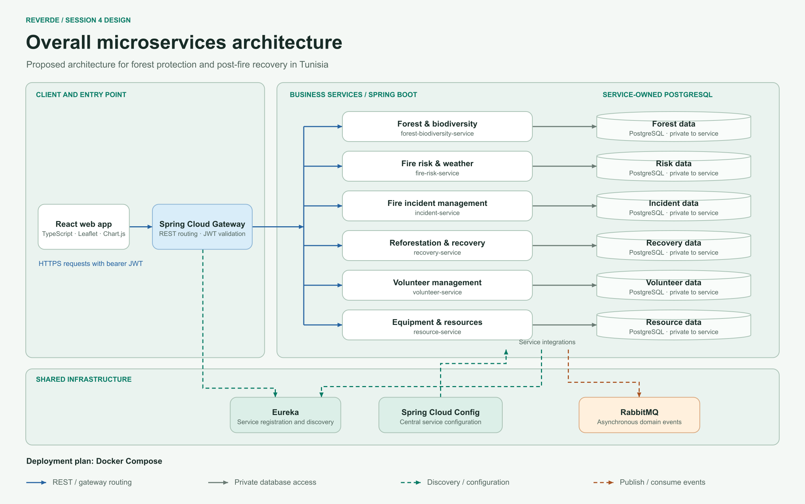

AWD Final Project · Session 4
Overall microservices architecture
Follow a request from the React web app through the gateway to one of ReVerde’s six Spring Boot services. The diagram also shows how the services discover each other, load configuration, and exchange events.

Reading the diagram
- Request path. The React app sends REST requests through Spring Cloud Gateway. The gateway validates bearer JWTs and routes requests to the appropriate service.
- Data ownership. Each service manages a private PostgreSQL database. Services can use APIs to look up data owned by another module.
- Shared infrastructure. Eureka provides service discovery. Spring Cloud Config supplies shared configuration, and RabbitMQ carries asynchronous domain events.
- Local deployment. Docker Compose is the proposed way to run the system for development and the demo.